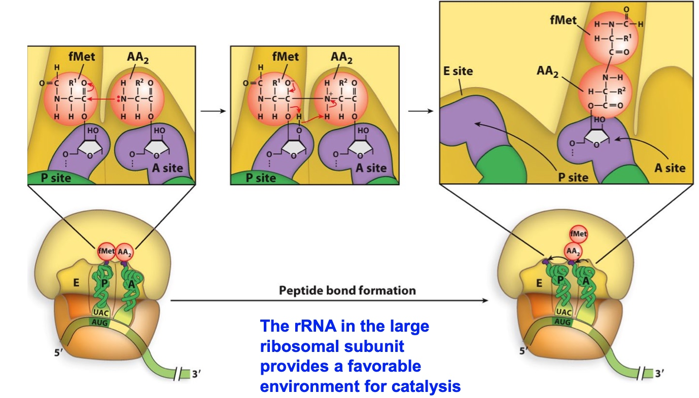
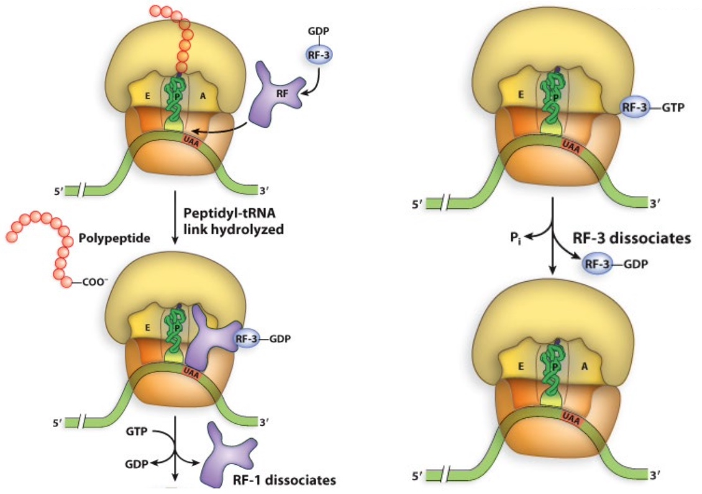

Features of the Ribosome
Three binding sites for tRNAs in the ribosome(EPA)
E = exit site
P = peptidyl-tRNA binding
A = aminoacyl-tRNA binding
The Shine-Dalgarno sequence positions the small subunit in the correct orientation
A Generic Translation Cycle
Overview of translation initiation in bacteria
Poll Everywhere analysis question:
During our last class, we talked about how important the tRNAs are as the translators of the genetic code.
Which of these bacterial translation initiation factors could be considered the “guardian” of the initiator tRNA?
- A. IF1
- B. IF2
- C. IF3
- IF-3 prevents the premature binding of the large subunit
- IF-1 prevents the binding of initiator tRNAs to the large subunit
- IF-2 escorts the fMet-tRNAfMet to the P site (carries formyl-methionine, which starts bacterial proteins)
GTP hydrolysis is a common way to regulate progression of translation
GTP hydrolysis is used by many translation-associated factors to induce conformational changes that promote their dissociation
A Crucial Difference: Initiation in eukaryotes starts with assembly of proteins at the 5’ cap
eIF4F is a complex containing
- eIF4A – RNA helicase
- eIF4E – binds 5’cap of mRNA
- eIF4G – binds eIF4E, eIF3, and PABP
Initiation of translation in eukaryotes involves scanning for the start codon
Circular RNA here is not found by Phosphate bond but hydrogen bond.
Experimental evidence for eukaryotic ribosome scanning: The toeprint assay
Basically, this is a primer extension assay using a mRNA as a template How far can the primer be extended by RT?
Shorter extension indicates the presence of proteins on the mRNA
ATP now is used for helicase.
Many Viruses Have Capless RNAs that are Translated
How?
They use internal ribosome entry sites (IRES), characterized by secondary structures in the 5’ UTR of the RNA.
These are also used by some eukaryotic genes when cells are stressed. (IRES trans-acting factors)
ITAF: IRES trans-acting factors
What results would you expect in a toeprint assay with the cricket paralysis virus and the following conditions?
Primer is radioactive.
Elongation and Termination
Elongation: an Overview
During elongation, additional tRNAs bind in the A site.
Accommodation allows tRNA to rotate so that amino acids are in the proper orientation for peptide bond formation.
The ribosomal RNAs are thought to promote the appropriate environment for catalysis.
Elongation: EF-Tu ensures correct aminoacyl-tRNA incorporation in bacteria
- EF-Tu protects the linkage between the tRNA and the amino acid as it escorts the tRNA to the A site
- GTP hydrolysis results in accommodation, when the tRNA in the A site rotates towards the P site
Elongation: the 23S rRNA catalyzes the peptidyl transferase reaction
The rRNA in the large ribosomal subunit provides a favorable environment for catalysis

EF-G drives translocation of the ribosome
Think of EF-G as a ‘shoehorn’ or a golf club head. It serves to kick the tRNAs to the next site in the ribosome
Needs GTP!!
Termination of translation requires protein release factors
RF-1, RF-3

Release factors 1 and 2 use peptide anticodons that “recognize” stop codons
Ribosome recycling separates the large and small subunits
RRF: ribosome recycling factor
Poll Everywhere thought question:
Which of these pairs of molecules would you predict to be most similar at the tertiary structure level?
- A. mRNA & tRNA
- B. EF-Tu-tRNA & EF-G
- C. RF3 & tRNA
- D. rRNA & ribosomal proteins
- E. tRNA synthetase & RRF